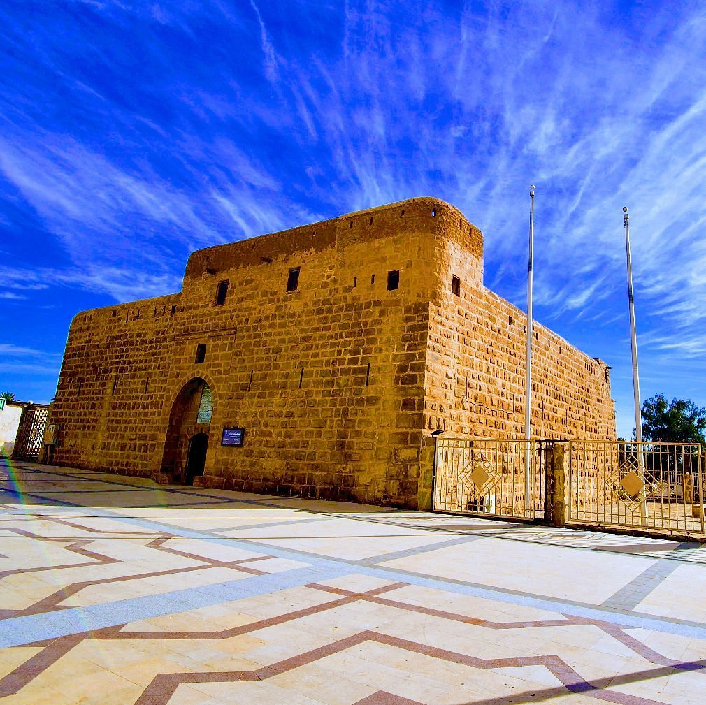
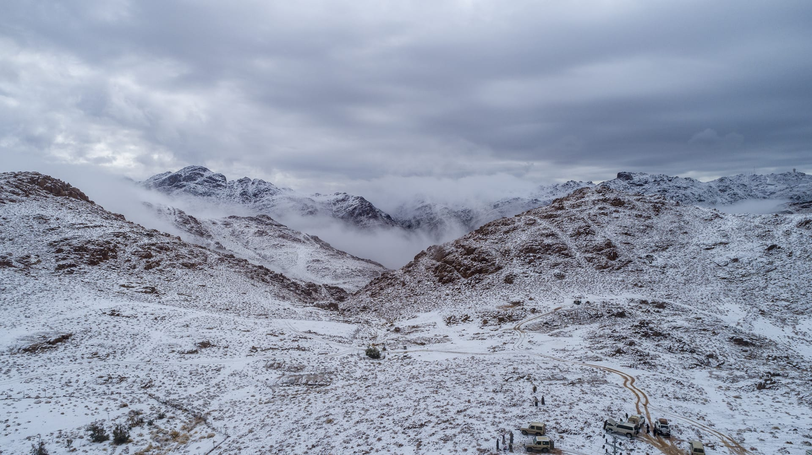
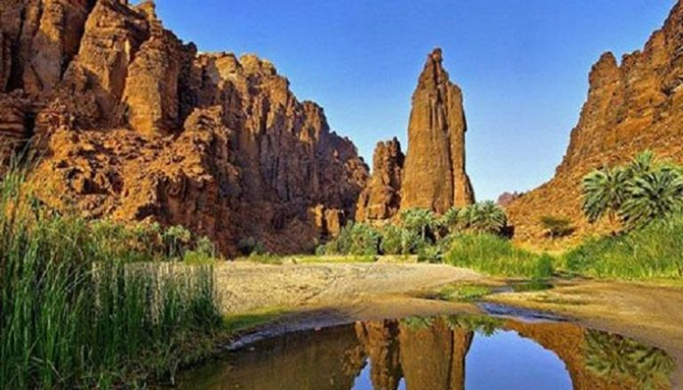

عاصمة المنطقة وبوابة الشمال — مدينة تجمع بين الأصالة والحداثة
شمال غرب المملكة
معتدل صيفاً، بارد شتاءً
جبل اللوز 2549م
1344 هـ
قلعة تبوك الأثرية
مطار تبوك الإقليمي
تبوك مقر إمارة منطقة تبوك وكبرى مدن شمال غرب المملكة العربية السعودية. يعود تاريخها إلى ما قبل الميلاد بأكثر من 500 عام، حيث كانت تُعرف باسم "طابو" وكانت عاصمة للعيانيين.
اشتهرت تبوك تاريخياً بكونها موقع غزوة تبوك الشهيرة في عهد النبي محمد ﷺ عام 9 هجرية، وهي من أكبر الغزوات في صدر الإسلام. ولا تزال آثار هذا الحدث التاريخي العظيم شاهدة على أرض المدينة.
تتميز المدينة اليوم بكونها مركزاً تجارياً وسياحياً مهماً، وتضم مطاراً دولياً يربطها بمختلف مدن المملكة والعالم. وتُعدّ بوابة لاستكشاف المعالم الطبيعية والتاريخية الرائعة في المنطقة.

قلعة تاريخية بُنيت في العصر العباسي وجُدِّدت في العهد العثماني، وتضم متحفاً يعرض مقتنيات أثرية نادرة تحكي تاريخ المنطقة عبر العصور.
🏛️ تاريخي
أعلى قمة في منطقة تبوك بارتفاع 2549 متراً فوق مستوى البحر، يكتسي بالثلوج في فصل الشتاء ويُعدّ وجهة مميزة لعشاق الطبيعة والمغامرة.
🏔️ طبيعي
وادٍ خلاب يتميز بتشكيلاته الصخرية الرائعة وجدرانه الحمراء الشامخة، ويُعدّ من أجمل المواقع الطبيعية في شمال غرب المملكة.
🌄 طبيعي